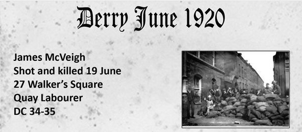

This page highlights media references that document the largely forgotten Civil War period in Derry during June 1920. In a few short days, 20 people were killed and 39 wounded. One of the victims was my great grandfather James McVeigh. The resources below give historical context and a personal connection to the events.
Shot and killed: 19 June 1920
Address: 27 Walker’s Square
Occupation: Quay Labourer
Burial: DC 34–35
